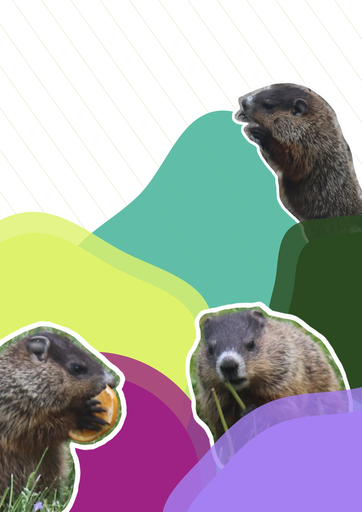

THE KIDS
We think there are a total of six little ones
from Bill and Billhemina. They don’t tend to travel in a pack and have only seen them together as a group a couple of times. They’re a little slower to react so getting photos of them through the summer and fall has been easier than their camera-shy parents. I think they’ve extended their burrow and honestly don’t know how much has been dug up under our buildings… but have no plans to evict any time soon. If they’re still around next spring/summer, we’re hoping to build a little garden and eating area just for them (inspired by Chunk the Groundhog).
